Откуда я
Кыргызстан.
Горы, простор и место, где всё началось.
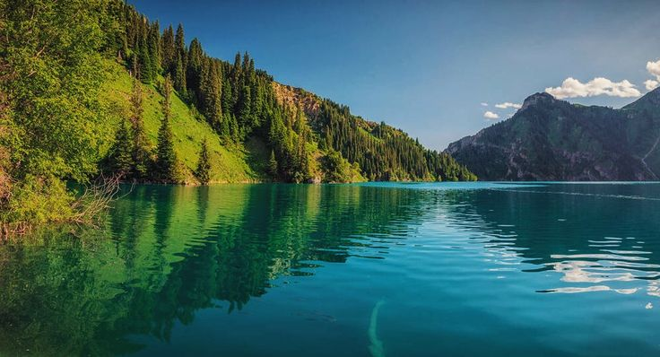

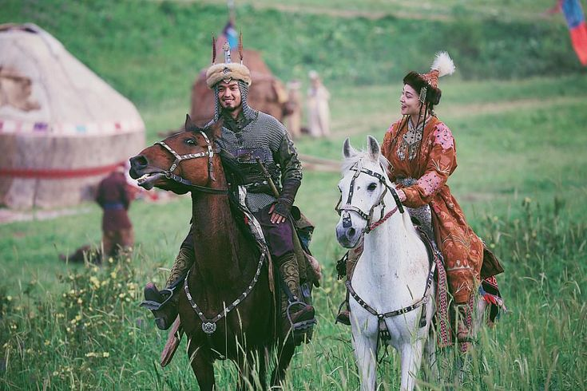
Обо мне
Обычный парень.
Свой путь.
Меня зовут Мухаммадзохид. Я вырос в Кыргызстане, в городе Ош,
в районе Араван, где уважают семью, старших и простые человеческие ценности.
Для меня это важно до сих пор.
В детстве я был обычным любопытным ребёнком: хотел понять, как всё работает,
иногда лез туда, куда не надо, и мог часами разбирать вещи, чтобы посмотреть,
что внутри. Это любопытство позже и привело меня в программирование.
Я не люблю делать из себя кого-то особенного. У меня были обычные радости,
обычные трудности, периоды, когда я терял интерес, и моменты, когда приходилось
начинать почти с нуля. Но именно так и складывается путь.
Мой путь
Как я пришёл в программирование.
Не по прямой. Зато по-настоящему.
Первые строки кода
Впервые начал программировать ещё в школе. Тогда это было просто интересно: хотелось понять, как создаются программы и что можно сделать самому.
Пауза и возврат
Потом я на время забросил это дело. На первом курсе вернулся к программированию, но быстро выгорел. Тогда стало понятно, что одного интереса мало — нужна дисциплина и терпение.
Настоящее возвращение
По-настоящему я вернулся только на втором курсе. Уже без лишнего шума, спокойно и по делу. С тех пор начал двигаться увереннее и собирать результаты, которые стали подтверждением, что я иду в правильную сторону.
Главный проект
Анализ кода с помощью искусственного интеллекта. Инструмент, который помогает разбирать код, находить ошибки и делать обучение понятнее.
AI и анализ кода
Основное направление проекта — искусственный интеллект, который понимает код и объясняет его.
Android-разработка
Мне интересна мобильная разработка — это второй большой фокус наряду с AI.
Обучение
Цель — сделать обучение программированию проще и понятнее для студентов.
Грант и развитие
Сейчас я иду на грант, и проект уже начали замечать. Для меня это просто ещё один шаг вперёд.
Что было сложно
Были и тяжёлые моменты: выгорание, сложные периоды, моменты, когда опускались руки. Но со временем я научился спокойнее относиться к трудностям — и просто продолжать двигаться дальше.
Без лишних слов — просто опыт, который сделал меня спокойнее и сильнее.
Галерея
Мои фото.
Листайте — как ленту.
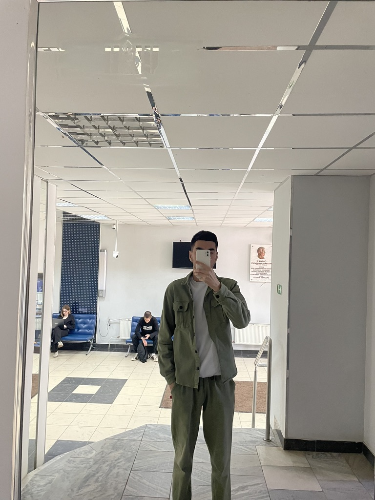
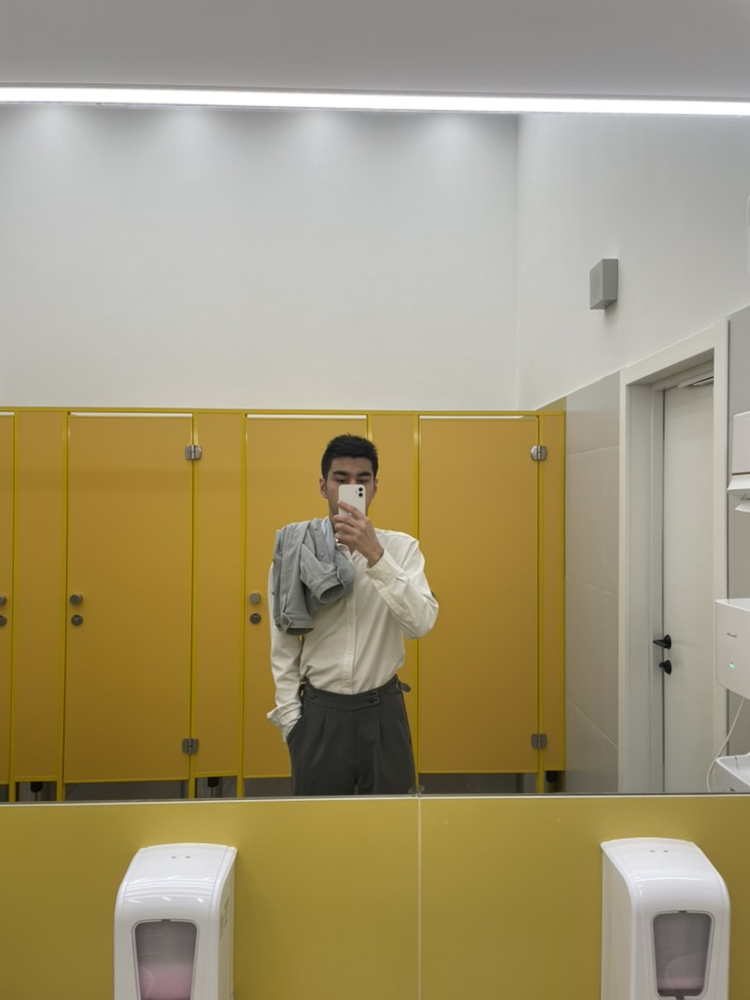
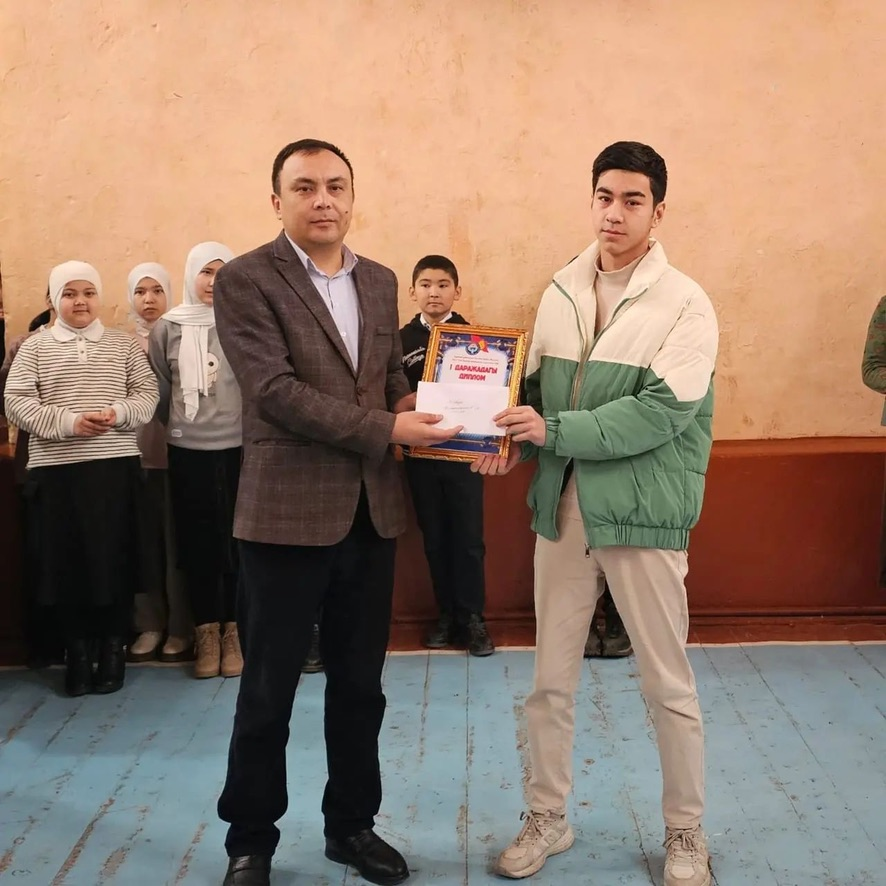
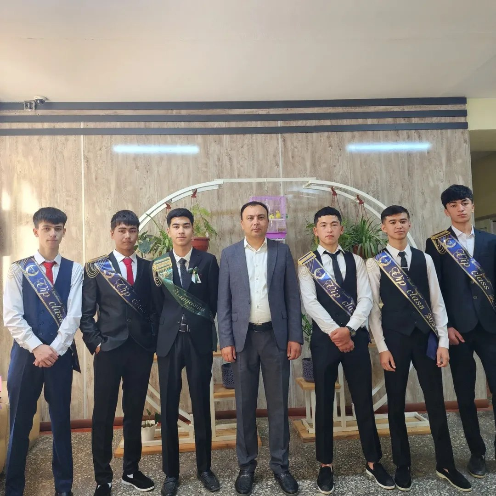
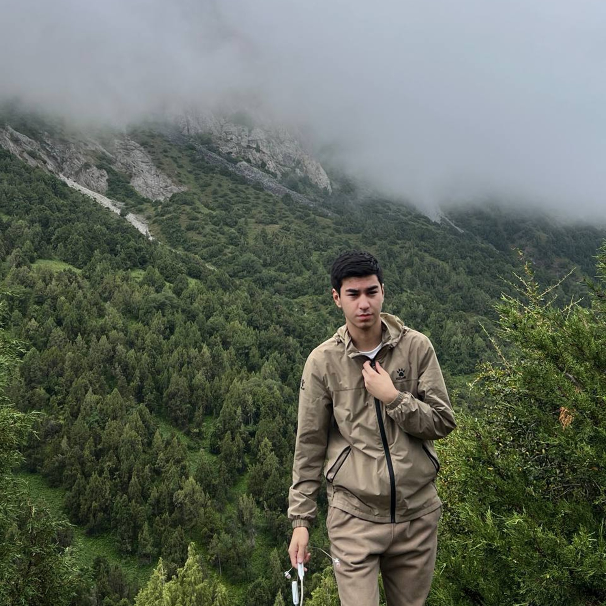
Достижения
Награды.
Результаты, которые стали подтверждением, что я иду в правильную сторону.
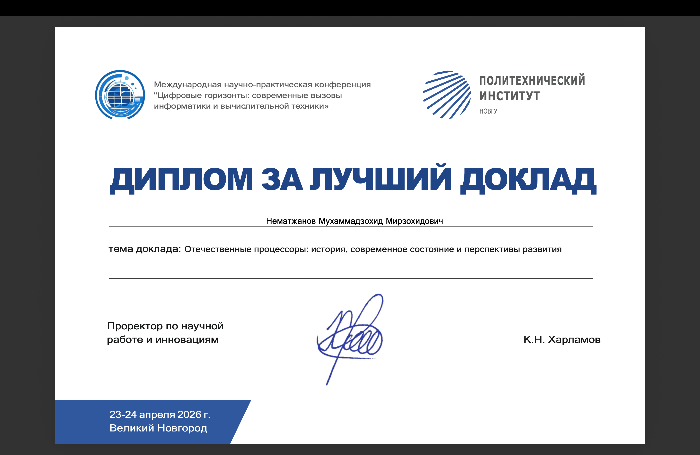
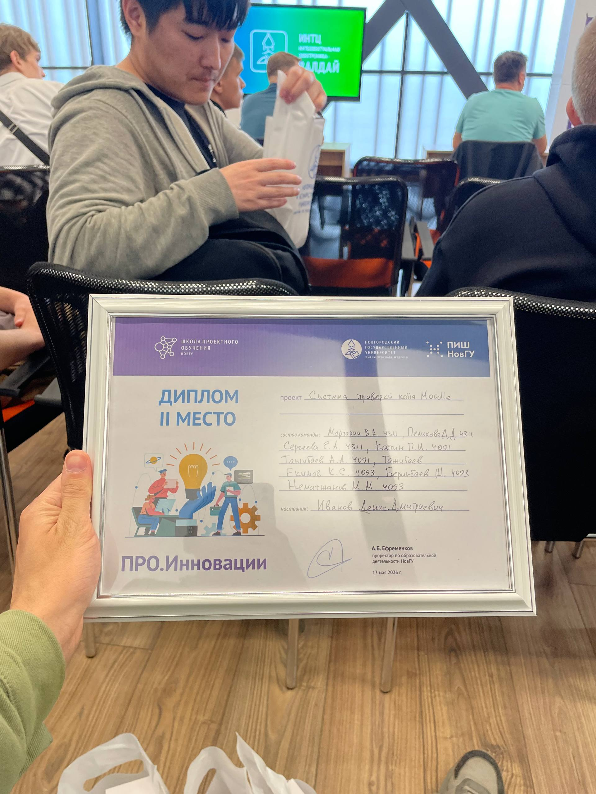
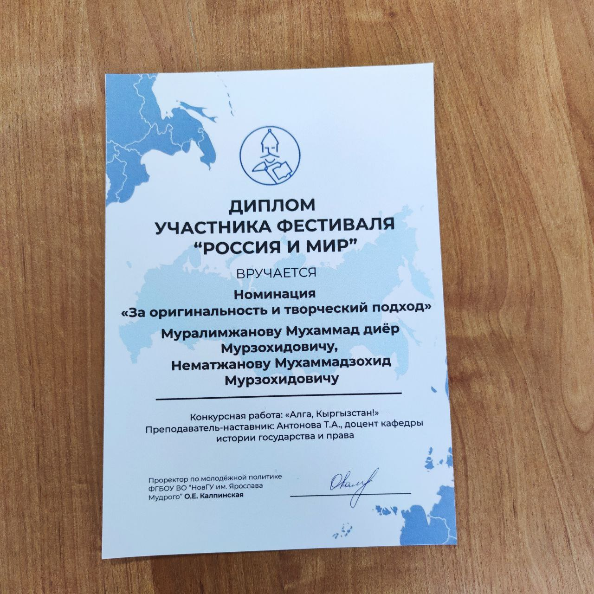
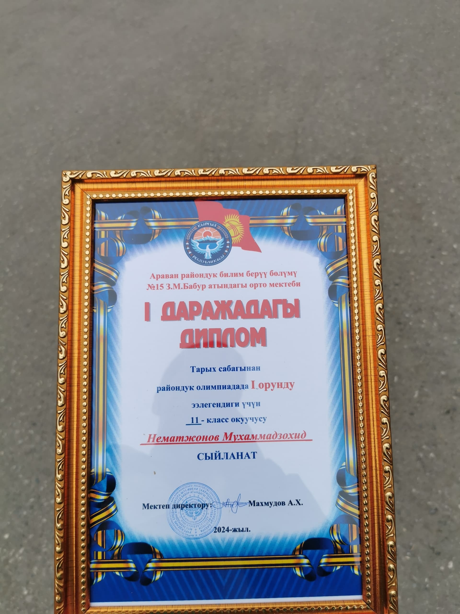